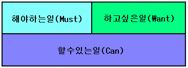

누군가가 무슨 일을 할 것인지. 무슨 일을 했을지 알고 싶을 때에는 먼저 그 사람의 작업 우선순위를 알아봐야 한다.
여러가지 우선순위 산정 방식이 가능하겠다.
영향을 미치는 요소도 각양각색이다.
급한일, 중요한일 등의 순서로 생각할 수도 있지만 이것은 무척 주관적이고 수치화 하기 힘들다.
하지만 인간이 하는 일은 확실히 다음의 범주에 들어간다.
하고싶은일, 해야하는일, 할 수 있는 일.
이 세가지를 벗어나는 일은 결코 없다.
이 중에서 '할 수 있는 일' 은 전제에 해당된다. 그 누구도 불가능한 일을 할 수는 없다.
따라서 하고싶은일과 해야하는일이 서로 경쟁하게 되는 것이다.
[인간의 행동 우선순위]
그리고 해야하는일(Must)과 하고싶은일(Want) 사이의 경쟁은 대체로 해야하는일(Must)이 앞서게 된다. 가산점이 있다고 볼 수 있다.
여기서 해야하는일(Must)은 '해도 좋고 안해도 좋은' 일이 아니다. 이런것이 바로 '하고싶은일(Want)' 의 범주에 들어간다.
결과적으로 인간이 하는 일은 다음 두가지 뿐이다.
할 수 있고 - 해야하는일
할 수 있고 - 하고싶은일
내 머리속엔 다음과 같은 코드가 새겨져 있는 것이다.
if (I.Can == true)
{
if (I.Must == true)
I.Do();
else if (I.Want == true)
I.Do();
}
당신은 지금 어떤 일을 하고 있을까?
해야 하는일? 아니면 하고 싶은일?
난 그 두가지가 모두 true 다.